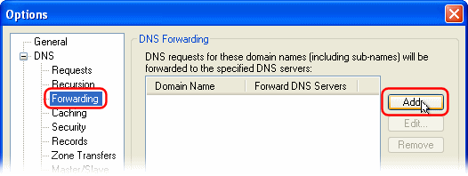
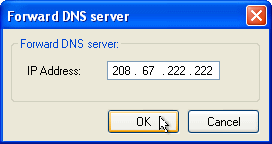
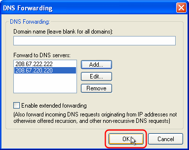

OpenDNS.com is a large scale DNS caching system which provides added benefits like phishing protection, adult site blocking, faster DNS look ups, automatic correction of URL typos, and more.
You can use OpenDNS.com with Simple DNS Plus by adding their DNS servers to the forwarding list.
In the main window of Simple DNS Plus, from the "Tools" menu select "Options...":
In the Options dialog, in the left list select "Forwarding", then click the "Add" button:

In the DNS Forwarding dialog, leave the "Domain name" field blank, and click the "Add" button:

Enter 208.67.222.222 and click OK:

Repeat for 208.67.220.220:

Back in the "DNS Forwarding" dialog you should now have both IP addresses 208.67.222.222 and 208.67.220.220 listed.
Click the OK button:

And back in the "Options dialog" you should now see and entry for "<all>" with the OpenDNS.com DNS servers.
Click the "OK" button.

Visit http://welcome.opendns.com to test your new settings.
If you see the "Oops" page, please try 3 more tests, in case the Welcome page was improperly cached:
1. Make sure your computer is configured to use the local Simple DNS Plus server (see reference article below)
2. Visit the OpenDNS.com demonstration site www.internetbadguys.com. If you were successful in switching to OpenDNS, it should be blocked as a phishing site. Otherwise, it will tell you that it's a demonstration site.
3. Second, make a deliberate typo in the TLD, like www.craigslist.og and see if it resolves to craigslist.org. If you are using OpenDNS, you will be taken to the classifieds site. If you are not, you will get your default browser error page.